Electrical protection | Incident energy
Arc-flash and protection study
Arc-current inputs, incident-energy calculations and time-current protection curves.
- Status
- Protection analysis
- Focus
- Energy
- Tools and methods
- Protection / TCC / Electrical safety
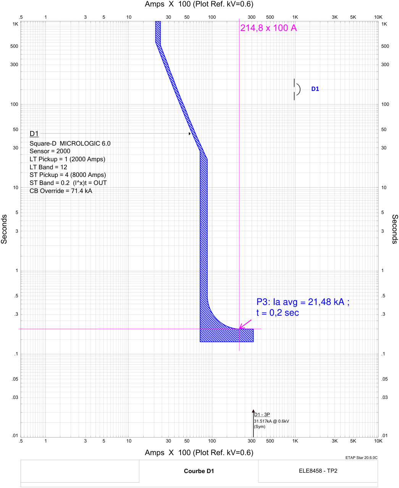
Objective
Examine how fault conditions, electrode configurations and protection clearing times affect an academic arc-flash calculation.
Engineering work
- Organize equipment input parameters and fault cases.
- Read the relationship between fault current and clearing time on TCC plots.
- Compare how protection assumptions change calculated exposure.
- Document assumptions and calculation boundaries.
Outcome
The report contains input and result tables, and the archive preserves a set of annotated TCC plots. The gallery presents these as saved coursework evidence.
Scope and limits
These are academic calculations, not an approved safety assessment. They must not be used to select PPE, authorize energized work or establish safe operating procedures for a real installation.
Archive gallery 20 items

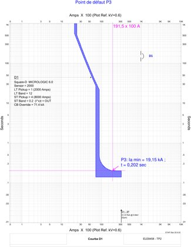

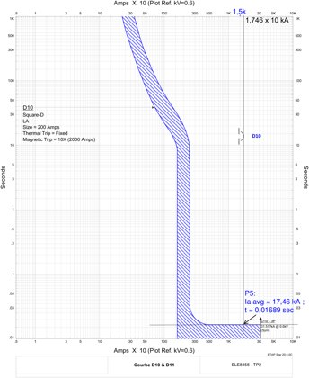


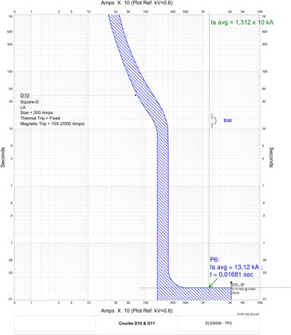

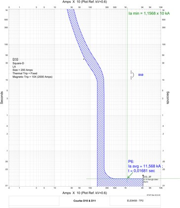


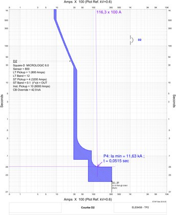

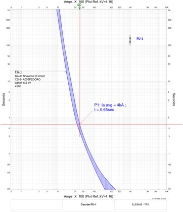

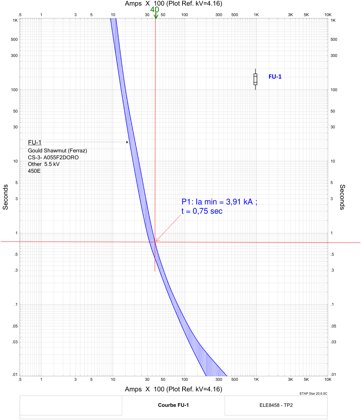

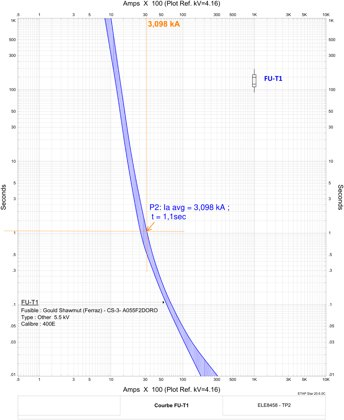

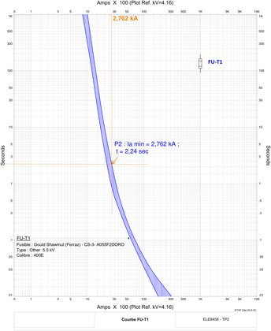

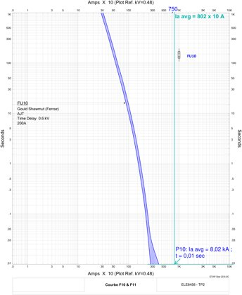

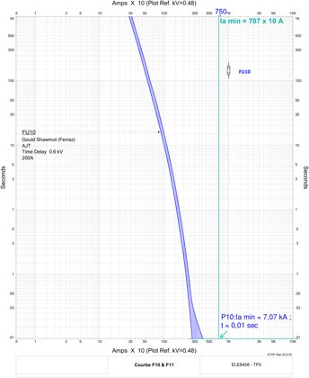

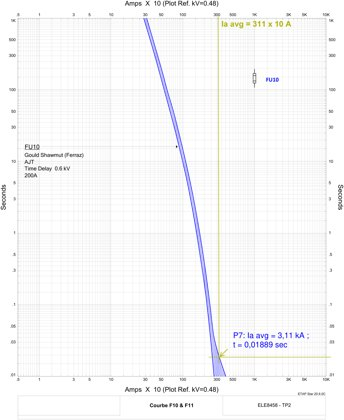

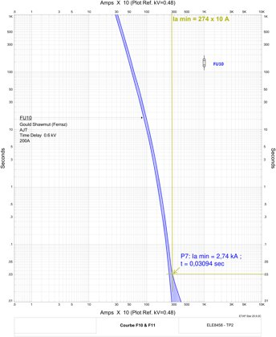

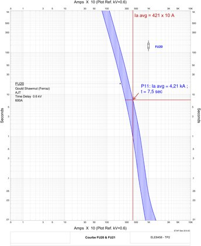

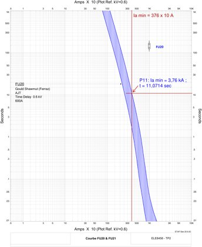

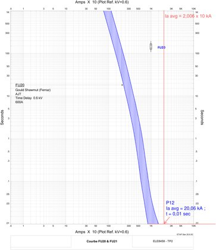

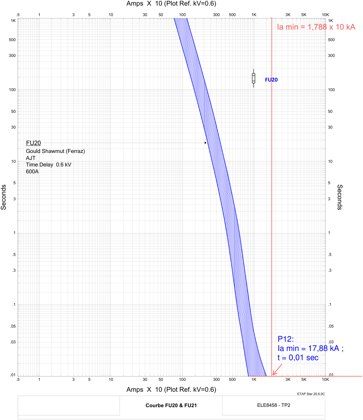

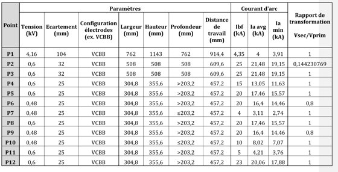
Documentation
Team report and saved TCC plots.